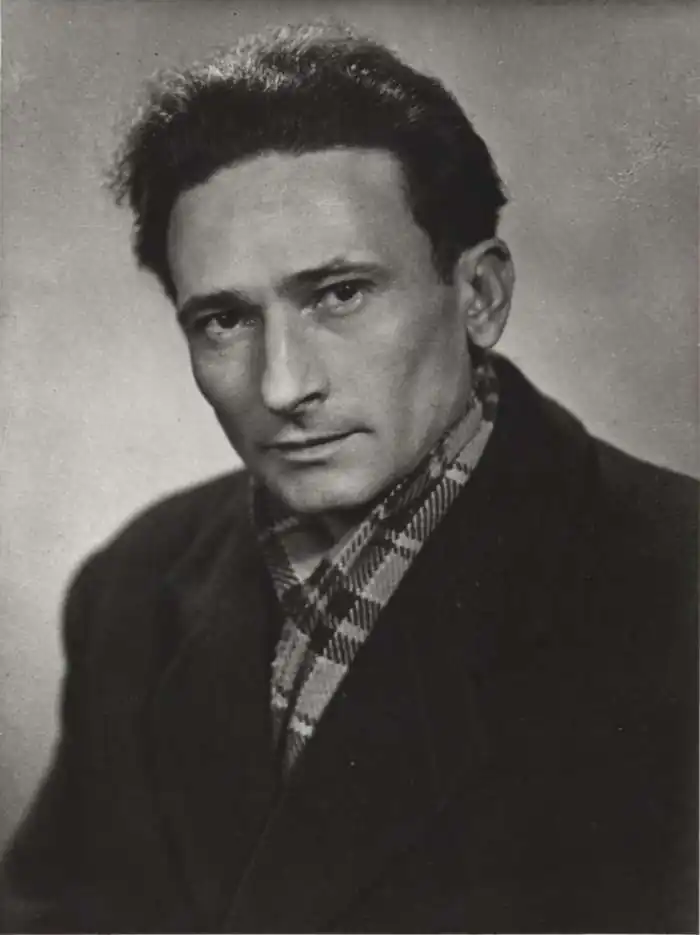

Станев, Еміліан (псевдонім Ніколи Стоянова Станева), (Велико-Тирново, 28.02.1907 – Софія, 15.03.1979).
Розпочав освіту в рідному місті, з 1922 року навчався в Єлені, закінчив середню школу у Враці як приватний учень (1928), недовго вивчав живопис в Академії мистецтв у Софії, вивчав фінанси та кредит у Вільному університеті в Софії. До 1944 року працював в адміністрації столичного муніципалітету, у 1945 році був керівником мисливського господарства в селі Буковець, з 1950 року очолював відділ "Художня література" в газеті "Літературний фронт". У 1971–1981 роках був народним представником у VI та VII Національних зборах, з 1974 року був академіком, за свою діяльність отримав численні нагороди та державні відзнаки (зокрема, премію Димитрова, 1964).
Дебютував оповіданням "Назустріч Великодню" (опубліковано в бібліотеці "Книга книг", 1931). Співпрацював з журналами "Златорог", "Мистецтво і критика", "Болгарська думка", "Кооперативний захист", "Мисливець", "Заповіти" тощо та з газетами "Літературний голос", "Жіноча газета", "Літературні новини", "Веселка" тощо; після 1944 року — з основними періодичними виданнями. Еміліан Станев — один із класиків болгарської прози, новатор у жанрах філософсько-історичного роману, анімалістичної прози та соціальної прози. Його твори позначені глибоким внутрішнім драматизмом та інтерпретують існування як низку конфліктних ситуацій, ставлячи людину в кожну мить перед моральним вибором. Дотримуючись діалогічних принципів у прозі, він зосереджується на зіткненні добра і зла. Також шукає відповіді на питання, що є добро, а що зло. Для Станєва немає простих та однозначних рішень, немає лінійної послідовності причин і наслідків, немає авторитетів, які не можна було б оскаржити та поставити під сумнів. Для нього сенс творчості полягає в досягненні багатошарової картини існування, що розглядається з різних точок зору, що відрізняються, перш за все, моральною мірою, з якою сприймаються людські стосунки. Станев належить до найкращих анімалістів болгарської прози – його ранні анімалістичні оповідання проблематизують місце людини в навколишньому світі та її зв'язок з природою. Паралельно з анімалістичними оповіданнями він розпочав свою письменницьку кар'єру з оповідань про маленьку людину, розчавлену життєвими обставинами, яке робить її життя безглуздим. Творчість: Писав з 1931 року. Рання проза: Видав збірки оповідань "Манячі вогні" (1938), "Мрійник" (1939), "Будні та свята" (1945), а також повість "Викрадач персиків" (1948), у яких зображував провінційне життя. Анімалістична проза: Здобув популярність як автор анімалістичних оповідань у збірках "Одинаки" (1940), "Остання боротьба" (1942), "Январське гніздо" (1953). Романи: Автор епічного роману "Іван Кондарев" (1958–1964) про боротьбу болгарського народу під час антифашистського повстання 1923 року. Також написав історичні романи "Легенда про Сибіна князе Преславського" (1967) та "Антихрист" (1970).